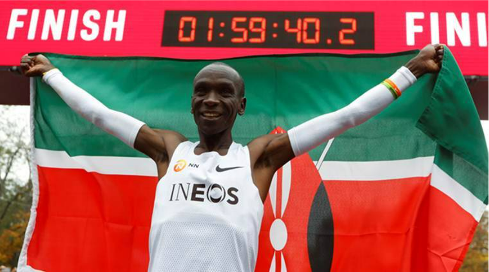

My Running Gallery
This is why I like running...
| This is my favorite shoe while running outdoors. Currently this is the extact model and color I'm using. I just love the cushion and support it gives, it takes away any foot pain after a run. |
 |
 |
This was the largest cross country team EPS has ever had and the best one. I knew joining the EPS XC team was going to be fun. I was able to create relationships with other runners. When it comes to meets were a small team compared to
other schools, with such hardworking team we show others how fast we are. I had great memories during the XC season! |
| Not just plain running I was interested in but I took a further step during middle school and now to do triathalons. I felt like adding the sport of swimming and biking would add in fun expirience. A triathalon is a process of swimming,
biking, and running in that order for certain distances. To me stamina based sports is a way to push my self and see how far I can go, that's why I tried out triathalons. |
 |
|  |
Why I run? It's because of Eluid Kipchoge and his techniques of running that inspire me. He's a person I look up to in terms of running. His acheivement's have broken distance records in the Olympics and has the time for the fastest marathon
which he finished in a shocking sub 2 hours! |
Besides running a marathon in the future. I hope to do a Iron Man which is a triathlon containing 3.1 miles of swim, 100 miles of bike, and 26.2 miles of run with no stops. It may seem painful but to me it's a challenge and hope to do it when
I'm older. |
 |